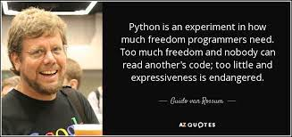

Python is a popular programming language. It was created by Guido van Rossum, and released in 1991.
It is used for:
1)Web development (server-side),
2)Software development,
3)Mathematics,
4)System scripting. Python was designed for readability, and has some similarities to the English language with influence from mathematics.
Python uses new lines to complete a command, as opposed to other programming languages which often use semicolons or parentheses.

Keywords & Identifiers
Python Keywords :
Keywords are predefined, reserved words used in programming that have special meanings to the compiler. Keywords are part of the syntax and they cannot be used as an identifier.
33 Keywords
await
else
import
pass
break
except
in
raise
class
finally
is
return
and
continue
for
lambda
try
as
def
from
nonlocal
while
assert
del
global
not
with
async
elif
if
or
yield
Python Identifiers :
An identifier is a name given to entities like class, functions, variables, etc. It helps to differentiate one entity from another.
Rules for naming identifiers
1.Identifiers can be a combination of letters in lowercase (a to z) or uppercase (A to Z) or digits (0 to 9) or an underscore _. Names like myClass, var_1 and print_this_to_screen, all are valid example.
2.An identifier cannot start with a digit. 1variable is invalid, but variable1 is a valid name.
3.We cannot use special symbols like !, @, #, $, % etc. in our identifier.
4.Keywords cannot be used as identifiers.
You can choose any name as an identifier if you follow the above rule, however, give meaningful names to identifiers that make sense.
Statements and Comments
Statements:
▻Instructions that a Python interpreter can execute are called statements. For example, a = 1 is an assignment statement. if statement, for statement, while statement, etc.
Multiline Statements
In Python, the end of a statement is marked by a newline character. But we can make a statement extend over multiple lines with the line continuation character (\).
Indentations
Most of the programming languages like C, C++, and Java use braces { } to define a block of code. Python, however, uses indentation.
A code block (body of a function, loop, etc.) starts with indentation and ends with the first unindented line. The amount of indentation is up to you, but it must be consistent throughout that block.
Comments
Comments are very important while writing a program. They describe what is going on inside a program, so that a person looking at the source code does not have a hard time figuring it out.
In Python, we use the hash (#) symbol to start writing a comment.
Python Input Output (I/O)
1)Python provides numerous built-in functions that are readily available to us at the Python prompt.
2)To allow flexibility, we might want to take the input from the user. In Python, we have the input() function to allow this.
Python Output
We use the print() function to output data to the standard output device (screen). We can also output data to a file
Example
Program:
Python Flow control
i) if Statement :
The if…elif…else statement is used in Python for decision making.
ii) For Statement :
In programming, a loop is used to repeat a block of code until the specified condition is met. Python programming has two types of loops: 1)for loop 2)while loop
How for loop works?
1)Loop continues until we reach the last item in the sequence. The body of for loop is separated from the rest of the code using indentation.
2)We can use the range() function in for loops to iterate through a sequence of numbers.
Example 1
Example 2
ii) While Statement :
How while loop works?
1)The while loop in Python is used to iterate over a block of code as long as the test expression (condition) is true.
2)In Python, the body of the while loop is determined through indentation.
3)The body starts with indentation and the first unindented line marks the end.
Example 1
Python Functions
1) In Python, a function is a group of related statements that performs a specific task.
2)
Functions help break our program into smaller and modular chunks. As our program grows larger and larger, functions make it more organized and manageable.
Syntax for function
1) Keyword def that marks the start of the function header.
2) A function name to uniquely identify the function. Function naming follows the same rules of writing identifiers in Python.
3) Parameters (arguments) through which we pass values to a function. They are optional.
4) A colon (:) to mark the end of the function header.
Python recursion
Recursion is the process of defining something in terms of itself.
A physical world example would be to place two parallel mirrors facing each other. Any object in between them would be reflected recursively.
Example
Lambda Function(Anynomous)
Lambda functions can have any number of arguments but only one expression. The expression is evaluated and returned. Lambda functions can be used wherever function objects are required.